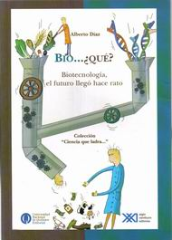

|

| |
Bio... ¿qué?
Lo anuncia la introducción:
de gran utilidad para políticos en campaña electoral o para estudiantes necesitados
de material para monografías. Y así es, porque de la lectura de Bio... ¿qué? (aún
con ese título tan bizarro) surge una insospechada trama de negocios, mercados
y tecnologías que ya existe y que se sigue entretejiendo en nuestra sociedad: Argentina
y el Mundo.
Díaz dedica un breve capítulo a explicar qué es la biotecnología,
cuáles fueron sus orígenes y en qué consiste. E inmediatamente se zambulle en
las aristas más apasionantes y desconocidas de las implicaciones prácticas de
esta tecnología explosiva que utiliza organismos, o partes de organismos vivos,
para fabricar -más barato y mejor- lo que a usted se le ocurra.
Biofármacos,
biodiagnósticos, agrobiotecnología, bioindustria... en tantos términos se ha metido
el prefijo "bio" que es hora de develar su real importancia. El autor analiza,
con conocimiento de causa, la particular relación entre la biotecnología y la
economía y su imagen especular: ciencia y empresa. Con una buena cantidad de cuadros
informativos, glosario y una bibliografía comentada, Bio... ¿qué? se constituye
en una excelente herramienta para conocer el abc biotecnológico de este futuro
vertiginoso que los argentinos, por suerte, ya estamos transitando. |
| |
Bio... ¿qué?
Biotecnología, el futuro llegó hace rato
Alberto
Díaz
Buenos Aires, 2005
Siglo XXI, 128 páginas | | | | | |
| | | | |
| | | | |
|